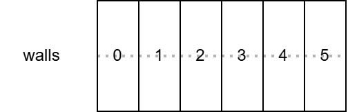

第十六章 把数据放在一起（结构体）
上次我们学习了如何构建和分发完成的游戏。这次我们将正式开始学习 Go 和 Ebitengine，重点讲解之前不足的 Go 功能，以及基于这些功能的 Ebitengine 使用方法。 首先，让我们学习如何使用结构体来整合数据。
结构体
结构体/struct 是将多个数据汇总为一个的功能，类似于便当盒，可以将多个物品组合在一起。结构体最简单的用法如下所示。
package main
import "fmt"
var p struct { // p 是 位置/position的首字母
x int
y int
}
func main() {
p.x = 3
p.y = 4
fmt.Println(p)
}
$ go run .
{3 4}
中间的换行可能会让人觉得怪，但变量 p 的类型是 struct 的{ 到 } 。

通过这种方式定义类型，变量 p 将内部包含两个 int 类型的变量 x 和 y 。结构体内部的每一个变量称为字段/field，并在结构体类型的变量名后加上点 . 来取值。在上述程序中，分别给 p 中的 p.x 和 p.y 赋值。
类型宣言
var x0 int
var x1 int
增加一个 int 类型的变量很简单，但如果想增加结构体类型的变量，由于类型中有换行，且较长，准确地写出所有字段的名称和类型就很麻烦。因此，通常会在类型声明中给结构体起一个喜欢的别名，以便于重复使用。类型宣言的语法是 type 新的类型名 原类型名 ，如下所示。
// 用构造体为基础，声明新的类型 position
type position struct {
x int
y int
}
// 使用新的类型
var p0 position
// 可以多次利用
var p1 position
var p2 position
// p0, p1, p2 都有 x, y 这两个字段
类型宣言中还有“能够声明类型相关的函数”这个附带效果，但这稍后再说。
扩展解说
实际上不仅限于结构体， int 等各种类型都可以作为基础进行类型声明，但这是声明方法的高级用法，因此省略。
结构体的值的表示
结构体也可以像数组和切片一样使用复合字面量通过 类型名称{字段的值, 字段的值...} 表示值。
// 假设已经声明了 position
func main() {
p := position{3, 4} // x的值、y的值
fmt.Println(p) // {3 4}
}
此外，还可以使用 {字段名称: 字段值, 字段名称: 字段值 ...} 这种语法。用法是
func main() {
p := position{x: 3, y: 4}
fmt.Println(p) // {3 4}
}
就是这样的感觉。
实际上
实际上，在合成字面量的字段名处放置索引的方式也可以使用这种语法来处理数组和切片，但由于不常用，所以不记住也没关系。
结构体的零值
结构体在未赋值时，各字段将为零值。如果是 position 类型，那么 x 和 y 也将是 0 。
var p position
fmt.Println(p) // {0 0}
{字段名: 值, ...} 这种记法，允许省略字段。省略的字段将为零值。
p := position{y: 5} // x 被省略了
fmt.Println(p) // {0 5}
结构体的优点
那么，通过使用结构体，我们可以将多个变量合并为一个。这有什么好处呢？
优势 1：变量声明的省力化
var px int
var py int
如果只有一组变量，作为不同的变量分开写，似乎也没什么问题，
var p0x int
var p0y int
var p1x int
var p1y int
// ...以下略...
但是像这样，使用多个变量的集合就很麻烦了。这时候，结构体就派上用场了。
var p0 position // 包含 p0.x, p0.y
var p1 position // 包含 p1.x, p1.y
// ...以下略...
优势二：批量复制
结构体的复制会复制所有字段。如果没有结构体的这个工具，就只有
p1x := p0x
p1y := p0y
这么写了。
但是因为有结构体，可以写成：
p1 := p0
简单许多吧。
优势 3：可选值
已经看到，省略字段的表达在结构体的值中是存在的。
再贴一遍
p := position{y: 5} // 省略了 x
fmt.Println(p) // {0 5}
这是将选项表示为结构体时很方便。我们来考虑以下的“咖喱饭的订单选项”结构体。
type 独家秘制咖喱饭 struct {
老板加点饭 int // 要加多少克
要不要叉烧 bool // 是否加叉烧
来几根脆脆肠 int // 要加几根脆脆肠
}
结构体可以省略不必要的字段，因此可以有以下各种用法。
order(独家秘制咖喱饭{}) // 标准版咖喱饭
order(独家秘制咖喱饭{老板加点饭: 200}) // 多来点饭
order(独家秘制咖喱饭{要不要叉烧: true, 来几根脆脆肠: 3}) // 加叉烧、三根脆脆肠（不加米饭）
[面向有经验的人] 使零值有用
“Make the zero value useful” 是 Go 的一个谚语，意思是“让零值有用”。
结构体中省略的字段会被赋予零值，但将“零值定义为有用的值”被认为是写好程序的技巧。
例如在上述例子中，米饭的追加量是“从普通份增加多少克”。
如果改为“米饭的要多少克”的话，如果没有设定这个字段，米饭的量就会变成 0，因为咖喱饭不能没有米饭，因此零值无效，是“无用的值”。
在这里，设置这个字段为“加多少饭”，会让此字段未赋值的时候，自然地使用标准份量，程序显得智能。这就是“让零值有用”的思维方式。
优势 4：与切片结合
var xs = []int{}
var ys = []int{}
使用结构体可以将“用两个切片表示 x, y 的多个配对”的传统方法整合到一个切片中。
var ps = []position{}
切片的优点在于可以随时自由地添加或删除元素，但如果管理两个切片，可能会出现在一个切片中添加了元素而忘记在另一个切片中添加的错误。通过将元素的类型设置为结构体并在一个切片中管理，可以避免此类错误的发生。这也是结构体的一个优点。
重构吧
使用方便的结构体，我们来重构一下地鼠游戏。
重构是指在不改变程序行为的情况下，仅改善写法。
请注意两个变量 wallXs 和 holeYs 。
var wallXs = []int{} // 土管的X坐标
var holeYs = []int{} // 空洞的Y坐标
这些可以通过使用结构体，将两个变量汇总成一个 `walls。
var walls = []struct{
wallX int
holeY int
}
 ２两个切片...
２两个切片...
 合并为一个*
我们可以基于此进行重构。range 语句的处理方式与之前有所不同，不再从两个切片中获取值，因此使用循环次数 i 的机会减少了。
package main
import (
"embed"
"math/rand/v2"
"github.com/eihigh/miniten"
)
//go:embed *.png
var fsys embed.FS
type wall struct {
wallX int
holeY int
}
var (
x = 200.0
y = 150.0
vy = 0.0 // Y方向速度(Velocity of y)的缩写
g = 0.1 // 重力加速度(Gravity) 的缩写
jump = -4.0 // 跳跃力
frames = 0 // 经过的帧总数
interval = 120 // 土管的追加间隔
wallStartX = 640 // 土管的初始化x坐标
walls = []wall{} // 土管的X坐标与空洞的Y坐标
wallWidth = 20 // 土管宽度
wallHeight = 360 // 土管高度
holeYs = []int{} // 空洞的Y坐标
holeYMax = 150 // 空洞的Y坐标的最大值
holeHeight = 170 // 空洞的的大小（高度）
gopherWidth = 60
gopherHeight = 75
scene = "title"
score = 0 // 保存分数的全局变量
isPrevClicked = false // 上一帧是否被点击
isJustClicked = false // 这一帧是否被点击
)
func main() {
miniten.Run(draw)
}
func draw() {
// 这一帧按钮是否被按下 = 前一帧按钮没按下、同时这一帧按钮被按下
isJustClicked = miniten.IsClicked() && !isPrevClicked
// 为了下一帧做判断、保存“这一帧按钮被按下”这个状态
isPrevClicked = miniten.IsClicked()
switch scene {
case "title":
drawTitle()
case "game":
drawGame()
case "gameover":
drawGameover()
}
}
func drawTitle() {
miniten.DrawImageFS(fsys, "sky.png", 0, 0)
miniten.Println("点击后开始")
miniten.DrawImageFS(fsys, "gopher.png", int(x), int(y))
if isJustClicked {
scene = "game"
}
}
func drawGame() {
miniten.DrawImageFS(fsys, "sky.png", 0, 0)
for i, wall := range walls {
if wall.wallX < int(x) {
score = i + 1
}
}
miniten.Println("Score", score)
if miniten.IsClicked() {
vy = jump
}
vy += g // 新的当前速度 = 当前速度+加速度
y += vy // 新的当前位置 = 当前位置+速度
miniten.DrawImageFS(fsys, "gopher.png", int(x), int(y))
// 土管相关的处理
frames += 1
if frames%interval == 0 {
wall := wall{wallStartX, rand.N(holeYMax)}
walls = append(walls, wall)
}
// 土管相关的处理结束
for i := range walls {
walls[i].wallX -= 2 // 少しずつ左へ
}
for _, wall := range walls {
// 描绘上方的土管
miniten.DrawImageFS(fsys, "wall.png", wall.wallX, wall.holeY-wallHeight)
// 描绘下面的土管
miniten.DrawImageFS(fsys, "wall.png", wall.wallX, wall.holeY+holeHeight)
// 制作表示地鼠的矩形
aLeft := int(x)
aTop := int(y)
aRight := int(x) + gopherWidth
aBottom := int(y) + gopherHeight
// 定义表示上面土管的矩形
bLeft := wall.wallX
bTop := wall.holeY - wallHeight
bRight := wall.wallX + wallWidth
bBottom := wall.holeY
// 上面土管的判定
if aLeft < bRight &&
bLeft < aRight &&
aTop < bBottom &&
bTop < aBottom {
scene = "gameover"
}
// 定义表示下面土管的矩形
bLeft = wall.wallX
bTop = wall.holeY + holeHeight
bRight = wall.wallX + wallWidth
bBottom = wall.holeY + holeHeight + wallHeight
/// 地鼠与下面土管的碰撞判定
if aLeft < bRight &&
bLeft < aRight &&
aTop < bBottom &&
bTop < aBottom {
scene = "gameover"
}
}
if y < 0 {
scene = "gameover"
}
if 360 < y {
scene = "gameover"
}
}
func drawGameover() {
// 把绘制背景、地鼠、土管的代码粘贴到这里
miniten.DrawImageFS(fsys, "sky.png", 0, 0)
miniten.DrawImageFS(fsys, "gopher.png", int(x), int(y))
for _, wall := range walls {
// 描绘上方的土管
miniten.DrawImageFS(fsys, "wall.png", wall.wallX, wall.holeY-wallHeight)
// 描绘下面的土管
miniten.DrawImageFS(fsys, "wall.png", wall.wallX, wall.holeY+holeHeight)
}
miniten.Println("Game Over")
miniten.Println("Score", score)
if isJustClicked {
scene = "title"
x = 200.0
y = 150.0
vy = 0.0
frames = 0
walls = []wall{}
holeYs = []int{}
score = 0
}
}
您觉得怎么样？由于结构体的字段只有两个，可能会让一些人觉得改善不显著，但工程规模越大，受益就会越明显。
本章总结
我们学习了将多个变量汇总为一个的功能——结构体。如果使用得当，可以使程序的意图更加明确，节省人力等多种好处。当你想到“这里可以使用结构体吗？”时，尝试一下，通过积累经验，你将能够编写出更聪明、更有条理的程序。